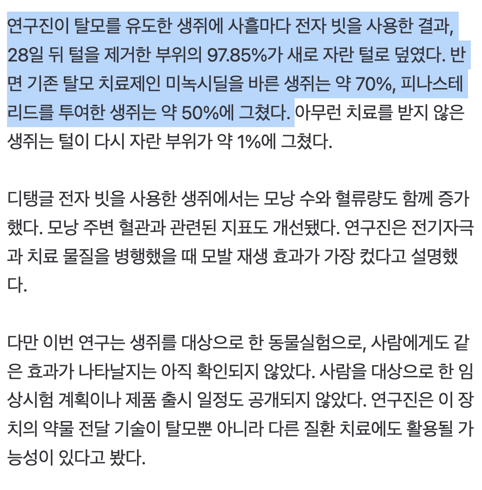

https://n.news.naver.com/article/011/0004684574?cds=news_media_pc
쥐 풍성지수
전자빗 98%
미녹시딜 70%
피나스테리드 50%

https://n.news.naver.com/article/011/0004684574?cds=news_media_pc
쥐 풍성지수
전자빗 98%
미녹시딜 70%
피나스테리드 50%
무적쥐 그만해!!
이제미련버리고그냥밀어라난너무수북해서샴푸값때문에걱정인데
쥐대가리 빗질도 해줘야돼?
또 쥐만 풍성해지지
오늘부터 건전지로 빗질해야겠다 슈발
그... 씨앗 심는거 아니면 다 의미없다구요
씨앗이 없어진거라구요
이도 새로 나게 한다는데 모발은 왜이리 어려워 저것도 실제 임상에서 또 흐지부지되겠지